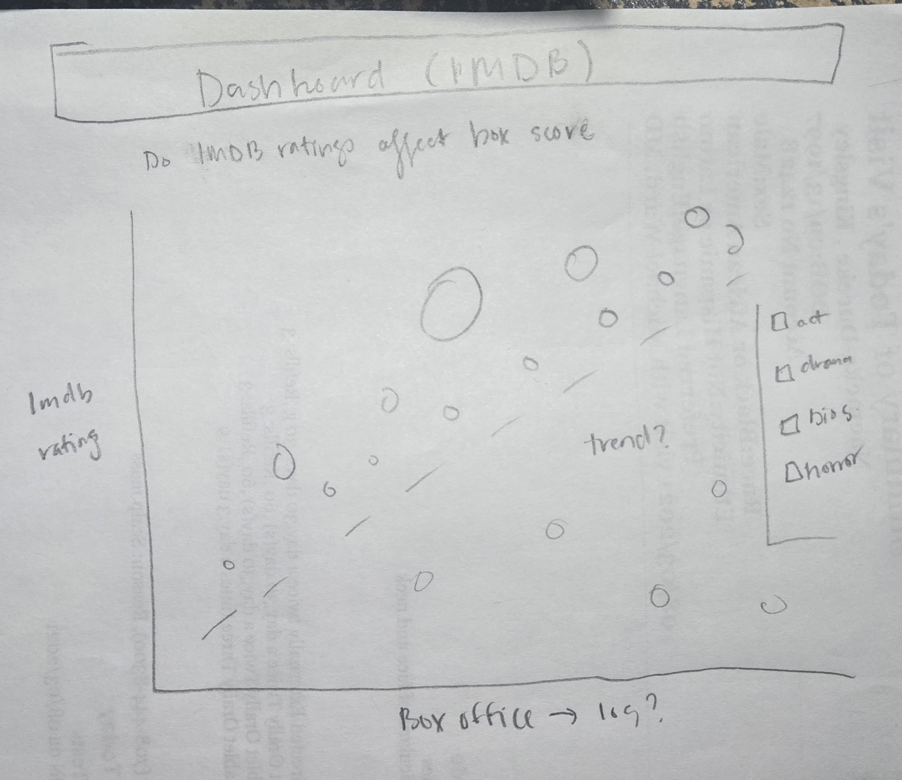
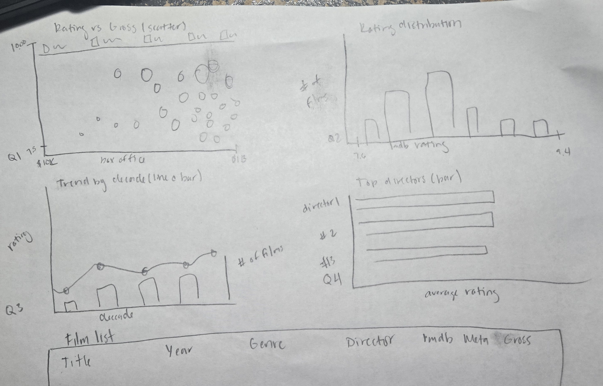

1. Project overview
This project is an interactive dashboard that lets a viewer explore the IMDB Top 1000 Movies dataset: 1,000 films from 1920–2020 with attributes for release year, genre, certificate, runtime, IMDB rating, Meta score, director, top-billed cast, vote count, and worldwide gross. The dashboard is built with D3.js v7 and is hosted as a static site (no backend), so it works in any modern Chrome browser.
Driving questions
The dashboard is organized around four related questions a film fan might ask:
Do critically loved films also make the most money?
rating vs. box-office gross
What does the rating distribution look like, and where does any given film land?
How have ratings, gross, and the volume of "great" films changed by decade?
Which directors most consistently produce critically acclaimed films?
2. Design process
First concept: single big scatterplot
My first instinct was to focus on the rating-vs-gross question and design one large scatterplot. Each film would appear as a dot, with the X-axis showing box-office gross on a log scale, since gross spans five orders of magnitude and a linear scale would crush most of the data into one corner. The Y-axis would track IMDB rating, color would encode genre, and dot size would be proportional to vote count as a rough proxy for cultural reach.

After living with the sketch for a while, I realized this design was answering only one of my questions. The dataset carries rich temporal information about release year, plus a lot of director and cast metadata that a single chart wastes. I decided to expand into a coordinated multi-view dashboard instead.
Second concept: coordinated multi-view dashboard
The second concept adds three companion charts: a histogram, a decade line and bar combo, and a director bar chart. All four panels are bound to a single shared filter state, so any selection in one chart re-filters the others. This is the linked or coordinated views pattern from class. I labeled the panels Q1 through Q4 in the sketch to keep them tied back to the four driving questions.

Final design
The screenshot below shows the second concept fully implemented in D3.js with the lavender theme, the live filter controls along the top, the sticky summary line, and the detail-on-demand film table at the bottom. The four panels and the film list match the second-concept sketch directly, with a few production refinements: the rating-vs-gross legend was lifted out of the chart corner and laid horizontally across the top of the panel so it stops covering the data, the decade chart layers a yellow average-rating line over translucent purple count bars, and the director ranking is restricted to directors with at least three films in the dataset.

Iterations after coding
Things I changed after I started implementing:
- I originally wanted a stacked area chart for "films per decade by genre," but with 21 genres it was unreadable. I replaced it with translucent bars showing total film count behind a yellow line for average rating — much easier to scan.
- I almost colored dots by decade. After testing, color-by-primary-genre was more useful because decade is already on the line chart's X-axis.
- I added the search box late, after I tried to find "Christopher Nolan films" in the table and realized scrolling was painful.
- I cut a planned "stars" co-occurrence network — D3 force layouts are fun but they didn't help answer my four questions, so removing it kept the page focused.
3. Design rationale
Visual encodings
| Variable | Encoding | Why |
|---|---|---|
| IMDB rating | Y-position (scatter, line); X-position (histogram, director bar) | Position is the most accurate visual channel — rating is the main quantitative variable. |
| Box office gross | X-position (scatter), log scale | Gross spans $1K → $2.8B. A linear scale would crush 90% of films into one corner; log spreads them. |
| Number of votes | Dot area (sqrt scale) | Area encodes a third quantitative dimension without adding a chart. Sqrt-scaled so area (not radius) is proportional to value, per perception literature. |
| Primary genre | Categorical color hue | Genres are unordered categories. Tableau-10 palette is colorblind-friendlier than D3's default schemeCategory10. |
| Decade | X-axis on line chart; bar height = film count | Decade is naturally ordinal/quantitative — position is the right channel. |
| Director | Y-axis labels on horizontal bar chart | Long director names read better horizontally; the X-axis stays free to encode the quantitative average rating. |
Layout
The two large charts (scatter and decade line) sit on the left because they carry the headline questions; the smaller histogram and director bar are to their right as "supporting" views. The film table runs full-width across the bottom because it's a detail-on-demand view — you read it after the charts narrow the field. Filters are pinned to the top so the user always knows the current state of the dashboard.
Color & theme
Dark theme with the IMDb yellow (#f5c518) used sparingly
for the most important call-outs (selected histogram bin, average-rating line,
selected director, table rating values). Secondary blue (#58a6ff)
is the default chart-element color so the yellow accent really pops when it
appears.
Interactivity
- Genre filter (dropdown) — narrows all four panels.
- Search — matches title, director, or any of the top-billed stars.
- Min-votes filter — strips out cult/obscure films when you want to focus on widely-seen cinema.
- Year-range brush on the decade line chart — drag to constrain to an era.
- Histogram bin click — click a rating bucket to filter to those films, click again to release.
- Director bar click — locks all that director's films highlighted (with surrounding films dimmed) across the scatter, plus filters the table.
- Sortable table columns — click any header to re-sort.
- Hover tooltips on every dot, bar, and bin show film/group details.
4. Findings I uncovered using the dashboard
Rating ≠ box office
The scatter shows only a weak positive correlation between IMDB rating and gross. Many 8.5+ films grossed under $10M; the highest-grossing films cluster around 8.0–8.4, not at the top.
Most "great" films are 7.6–8.0
The histogram is right-skewed: ratings under 8.0 dominate even in this hand-picked top-1000 set. Films at 9.0+ are vanishingly rare (just a handful).
Production volume soared after 1990
The decade bars climb steeply from the 1990s onward — the 2000s and 2010s contribute more than half of all top-1000 films, while average rating stays remarkably flat (~8.0).
Christopher Nolan, Stanley Kubrick & Hayao Miyazaki dominate director averages
With the "≥3 films" filter, the highest-average directors are a mix of modern blockbuster auteurs (Nolan), classical masters (Kubrick, Coppola), and animation (Miyazaki). Click any of their bars to see the highlight cascade across the scatter.
Genre × era effects
Filtering to "Animation" and brushing the line chart shows almost no top-1000 entries before the 1990s — Pixar, DreamWorks and Studio Ghibli's mainstream rise reshaped what "great animated film" means in this list.
Critics & audiences mostly agree, but…
Sorting the table by Meta score reveals a handful of films with strong audience love but middling critic reception (and a smaller set vice-versa) — interesting candidates for closer reading.
5. Demo video
A 2–4 minute screen-capture walkthrough of the dashboard with narration is embedded below.
6. Implementation notes
Data cleaning
The CSV needed three small clean-ups, all done at parse time in JavaScript:
Released_Yearhad one bad row ("PG") — dropped viaisNaNguard.Runtimewas strings like"142 min"; stripped non-digits and parsed to an integer.Grosswas strings with commas like"28,341,469"; stripped non-digits and parsed. About 17% of films have no gross — those are simply omitted from the scatter (which requires both axes), but kept everywhere else.
Tech stack
- D3.js v7 — all chart rendering, scales, axes, and the brush.
- Plain HTML, CSS, and JavaScript — no build step, no framework. The project is just static files plus the CSV.
- GitHub Pages — static hosting with a public URL.
Files in the repo
| File | Purpose |
|---|---|
index.html | Interactive D3 dashboard |
about.html | This documentation page |
imdb_top_1000.csv | Source dataset (1,000 films, 16 columns) |
20260501_201615.jpg | Initial pencil sketch (single-chart design) |
20260501_201627.jpg | Refined pencil sketch (coordinated dashboard) |
video2378517474.mp4 | 2–4 minute screen-capture demo with narration |
README.md | Project overview and setup notes |
7. Limitations & future work
- The dataset is itself biased — it's IMDB's Top 1000, not all films. Rating distributions look the way they do because someone curated for quality.
- "Gross" is unadjusted for inflation — older films are systematically penalized on the X-axis. A future version could use BLS CPI to normalize.
- Only the primary genre is used for color. A film tagged "Action, Crime, Drama" gets the Action color even when it's mostly drama.
- A force-directed view of co-starring relationships is the obvious next step but was scoped out for this submission.